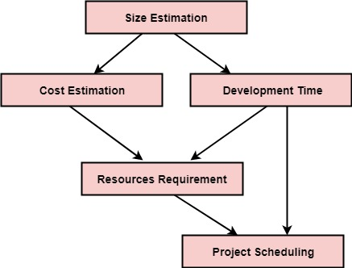

WELCOME TO MY LIBRARY
RAD Model
RAD (Rapid Application Development) Model
RAD is a linear sequential software development process model that emphasizes a concise development cycle using an element based
construction approach. If the requirements are well understood and described, and the project scope is a constraint, the RAD process
enables a development team to create a fully functional system within a concise time period.
RAD (Rapid Application Development) is a concept that products can be developed faster and of higher quality through:
Gathering requirements using workshops or focus groups
Prototyping and early, reiterative user testing of designs
The re-use of software components
A rigidly paced schedule that refers design improvements to the next product version
Less formality in reviews and other team communication
RAD - Rapid Application Development - Model
The various phases of RAD are as follows:
1.Business Modelling: The information flow among business functions is defined by answering questions like what data drives the business process, what data is generated, who generates it, where does the information go, who process it and so on.
2. Data Modelling: The data collected from business modeling is refined into a set of data objects (entities) that are needed to support the business. The attributes (character of each entity) are identified, and the relation between these data objects (entities) is defined.
3. Process Modelling: The information object defined in the data modeling phase are transformed to achieve the data flow necessary to implement a business function. Processing descriptions are created for adding, modifying, deleting, or retrieving a data object.
4. Application Generation: Automated tools are used to facilitate construction of the software; even they use the 4th GL techniques.
5. Testing & Turnover: Many of the programming components have already been tested since RAD emphasis reuse. This reduces the overall testing time. But the new part must be tested, and all interfaces must be fully exercised.
When to use RAD Model?
When the system should need to create the project that modularizes in a short span time (2-3 months).
When the requirements are well-known.
When the technical risk is limited.
When there's a necessity to make a system, which modularized in 2-3 months of period.
It should be used only if the budget allows the use of automatic code generating tools.
Advantage of RAD Model
This model is flexible for change.
In this model, changes are adoptable.
Each phase in RAD brings highest priority functionality to the customer.
It reduced development time.
It increases the reusability of features.
Disadvantage of RAD Model
It required highly skilled designers.
All application is not compatible with RAD.
For smaller projects, we cannot use the RAD model.
On the high technical risk, it's not suitable.
Required user involvement.
